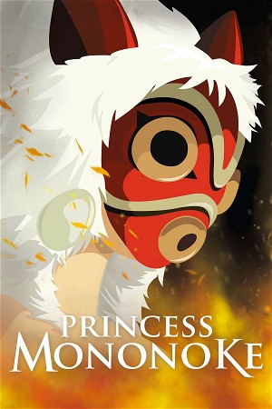

Princess Mononoke (1997)
AdventureFantasyAnimation
| Year | 1997 |
|---|---|
| Rating | US:PG-13 / US:Rated PG-13 |
| Genre | Adventure, Fantasy, Animation |
Ashitaka, a prince of the disappearing Emishi people, is cursed by a demonized boar god and must journey to the west to find a cure. Along the way, he encounters San, a young human woman fighting to protect the forest, and Lady Eboshi, who is trying to destroy it. Ashitaka must find a way to bring balance to this conflict.